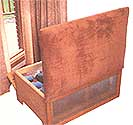
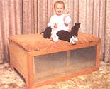
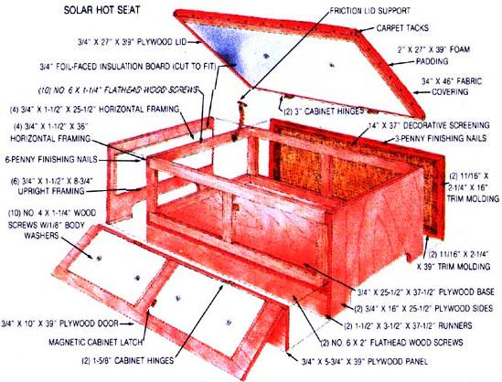

Pitch your electric space heater and replace it with this...
The handcrafted space heater pictured here can be used wherever you've got a full-length, south-facing window or sliding glass door, and it makes an ideal first solar project for the family newly awakened to the possibilities in harnessing the sun's energy. What's more, the solar hot seat-as its name implies-doubles as a useful piece of furniture, which makes it of added benefit to folks who live in cramped quarters or on limited budgets.
And just how does the solar hot seat work? Well, simply and unobtrusively. When it's placed before a large pane of glass on a sunny day-with its screened side facing into the room and its lid and back flap opened toward the sun-24 water-filled milk containers inside capture a useful amount of solar heat. When the sun sets (or no longer shines), the trunk can be closed back up to be used as a sitting stool; then the warmth that's been collecting in it all day will be released slowly into the living area through the screened panel.
CONSTRUCTION
Tempted to make a solar hot seat of your own? OK, find a tape measure ... a handsaw ... a coping saw or jigsaw ... a protractor ... a pair of tin snips ... a hammer ... a hand drill with bits ... and a screwdriver. Then scrounge up the following building supplies: A couple of 37-1/2"-long 2 X 4's ... about 25 linear feet of 1 X 2 pine ... 18 square feet of 3/4" plywood ... 10 feet of trim molding ...some foil-faced foam insulation and decorative screening ...a handful of finishing nails, screws, body washers, and carpet tacks ...two 3" hinges and two 1-5/8" hinges (with matching screws) ...a small magnetic latch ...and a lid support (preferably one with a friction catch). In order to turn your solar heater into an attractive and comfortable seat, you'll also need some sturdy fabric, as well as cushioning foam, for upholstering the lid.
Got everything? Then here's a step-by-step list of building instructions that, together with the illustration, should guide you through making your solar hot seat.
[1] Begin by nailing a 25-1/2" X 37-1/2" plywood base atop the two (parallel) 2 X 4 runners, using 6d finishing nails.
[2] Then build the frame up from this base (as shown in the diagram), using the cut-to-length 1 X 2 strips and finishing nails.
[3] Next, screw (from the inside) a 16" X 25-1/2" section of plyboard to each end of the framing to secure the structure. Use your coping saw to cut out the lower reliefs if desired.
[4] This done, screw (again from the inside) a 5-3/4" X 39" piece of plywood to the bottom third of the back side of the box. When that's in place, attach a 10" X 39" plywood door to the same side, at a point directly above this stationary panel, using the two small hinges.
[5] OK, move to the front of the trunk and cut the decorative screen to fit this side, af fixing it to the frame with mitered trim molding and finishing nails.
[6] Now, using the large hinges, attach the 27" X 39" plywood panel to the top of the box to form a lid.
[7] Cut the foil-faced foam insulation to fit inside the lid, the two sides, and the back door (making sure to allow for the vertical frame support as the illustration shows). Then use wood screws and body washers to hold these panels in place on the interior walls.
[8] You're almost done! Add the small magnetic latch to the back door, and the lid support to the top ... and-if you want to get the maximum use from available sunlight-paint the wood around the insulation with reflective silver paint.
[9] To finish up your solar project, measure and cut the material and the foam padding (or whatever else you have on hand) to fit over the lid. Then cover the padding with the cloth, securing both with carpet tacks spaced about 4" apart around the rim. For an added decorative touch, paint, stain, or upholster the two sides and back of your hot seat to match the cushioned lid.
Now your own solar hot seat is ready for action. Well, almost. You still have to fill the 24 milk jugs with water (use food coloring or clothing dye to darken the liquid, making it even more heat-absorbent) ...cap them (if you've lost the lids, secure plastic wrap around the rims) ...and place them in the hot seat. Now, you're really ready. Just open 'er up and let the sun shine in!
|
 |
 |
 |